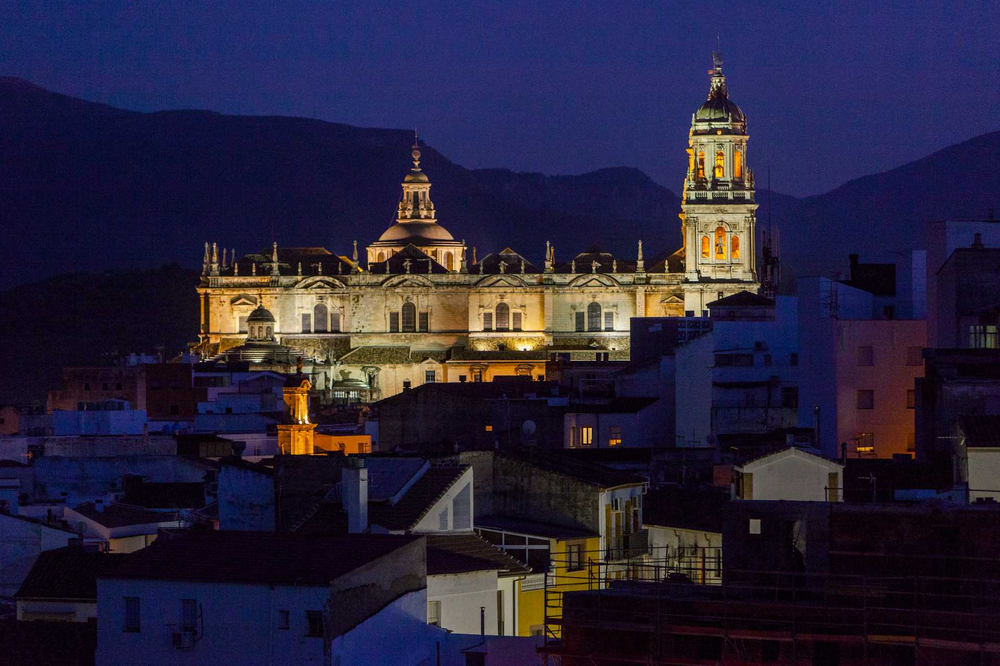
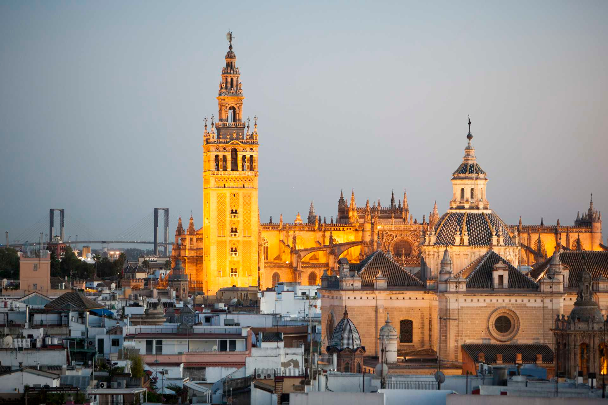
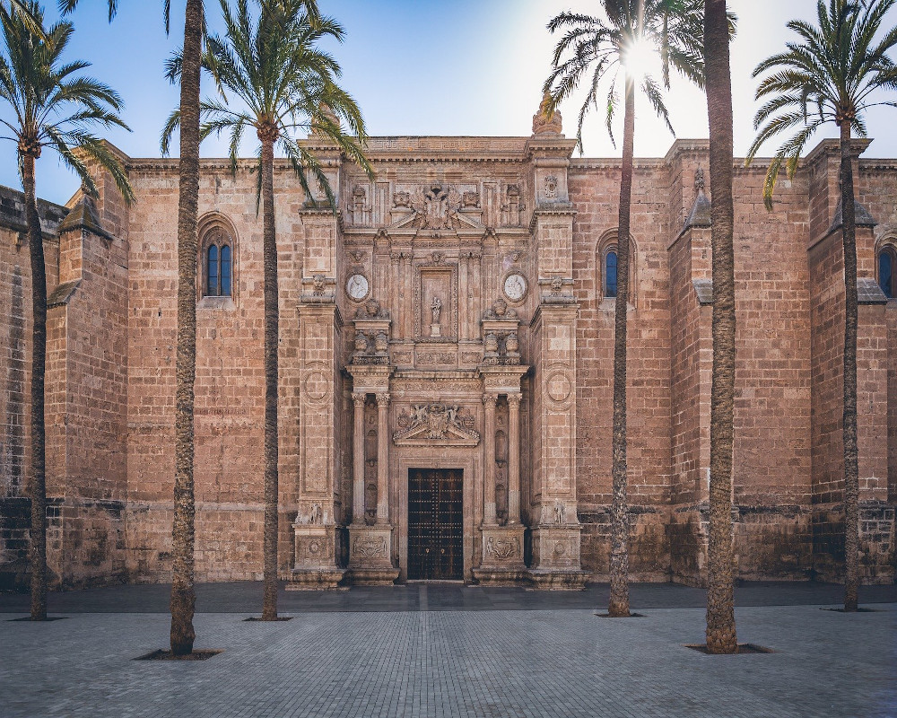
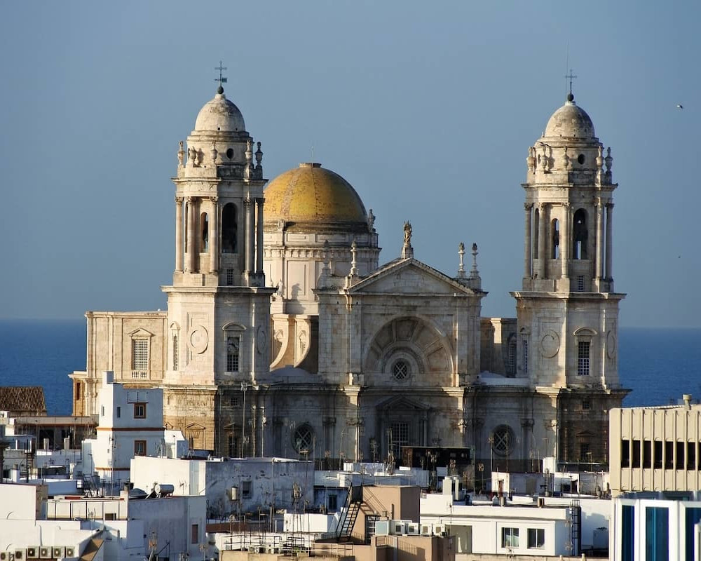
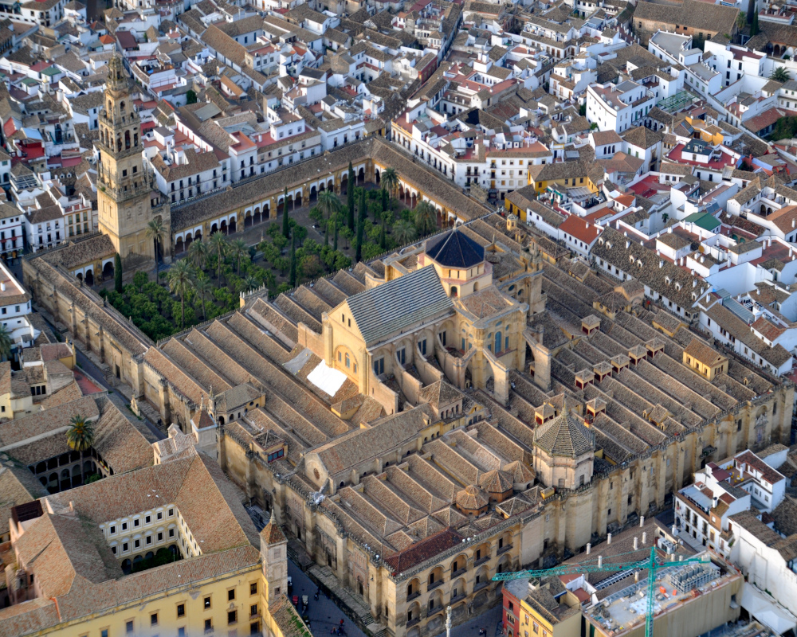
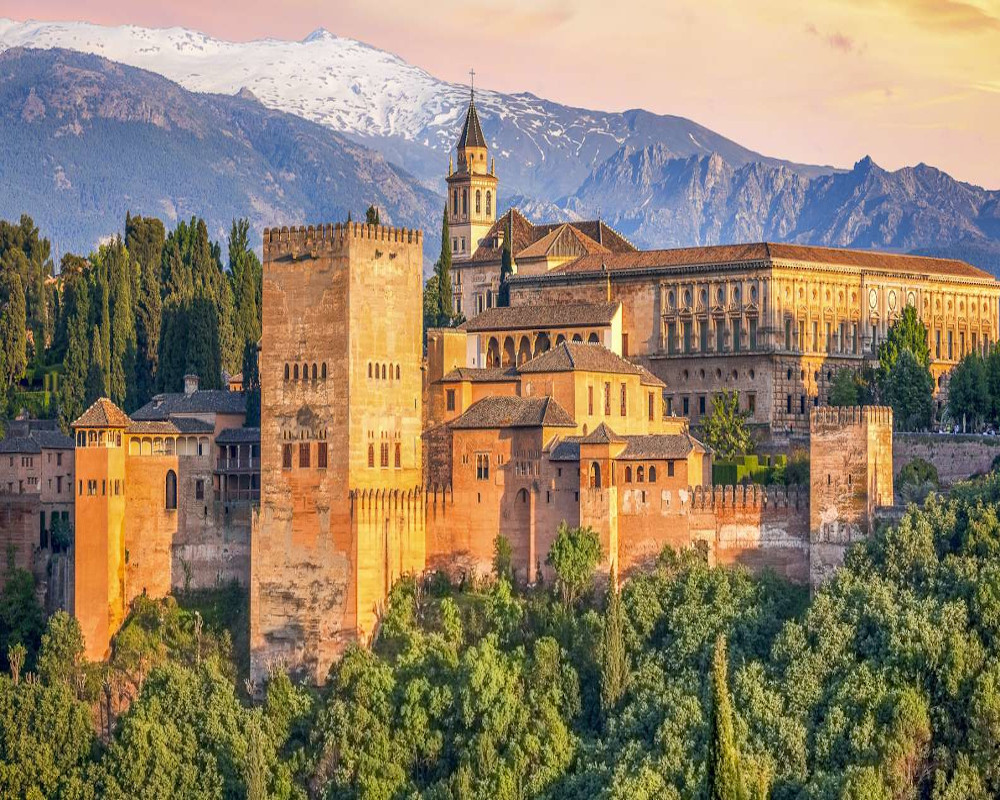
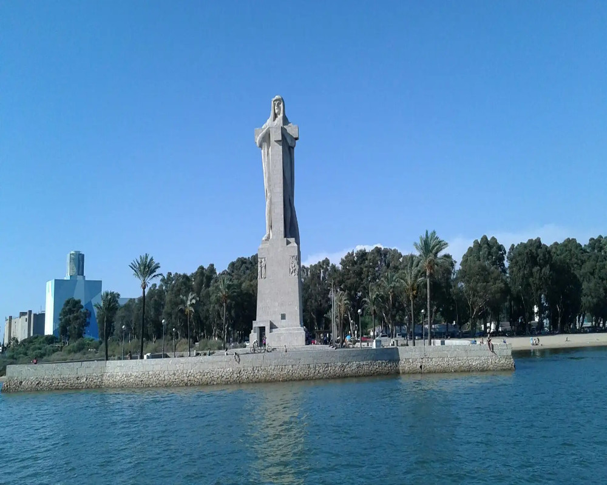
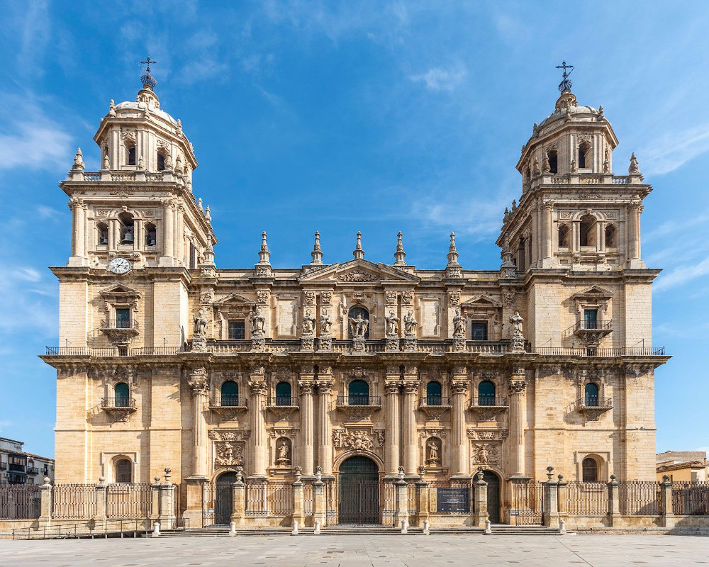
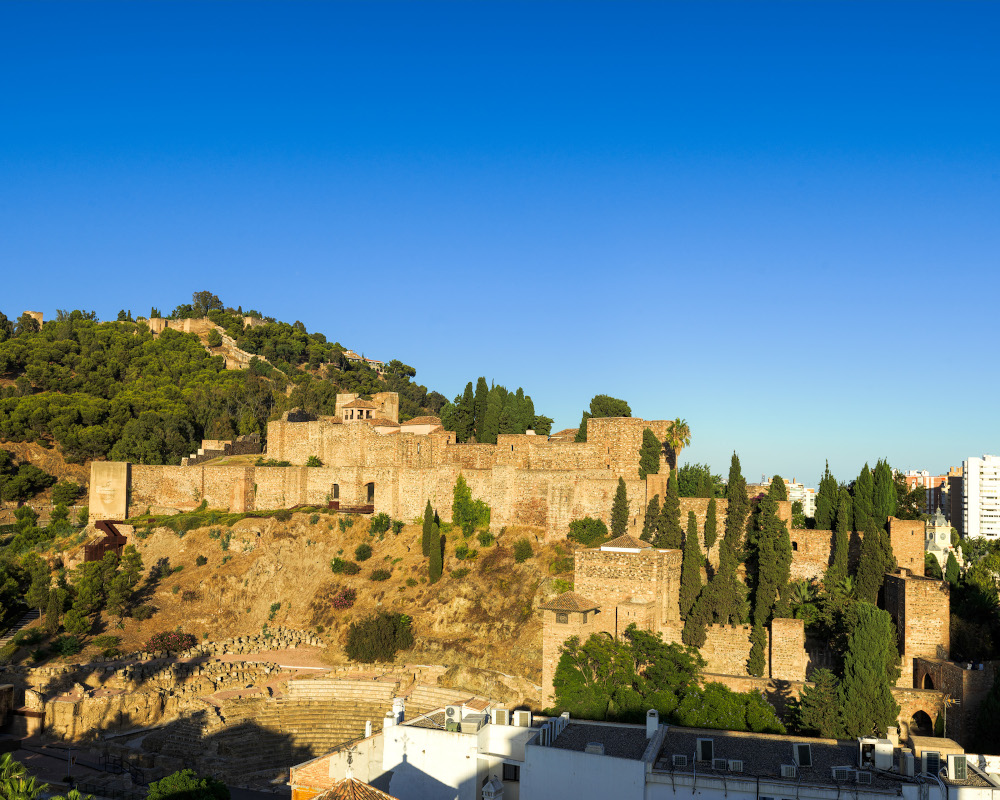
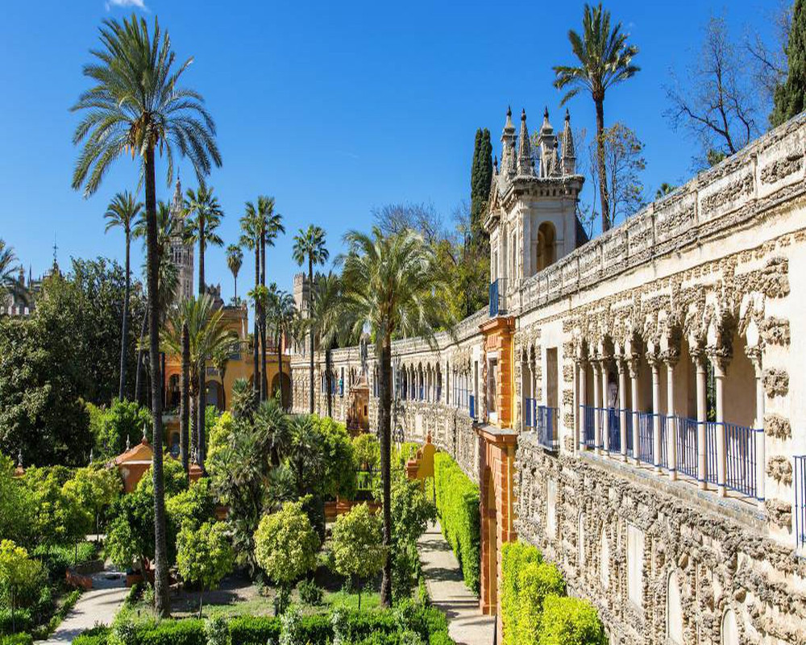

Almería
|

Cádiz
|

Córdoba
|

Granada
|
|---|---|---|---|

Huelva
|

Jaén
|

Málaga
|

Sevilla
|

|

|

|

|
|---|---|---|---|
Cómo llegar |
Dónde dormir |
Qué comer |
Qué hacer |
Andalucía está situada al sur de la Península Ibérica. El acceso a Andalucía puede realizarse en avión, en barco, en tren o por carretera. |
Los alojamientos de Andalucía satisfacen al viajero más exigente, desde un ambiente diferente al estilo más clásico. Hay multitud de opciones donde elegir. |
La gastronomía andaluza es tan amplia y variada como su territorio. Disfruta de todo unrepertorio de platos y productos cuya excelencia es celebrada en todo el mundo. |
Conoce las posibilidades que brinda esta región del sur de la Península Ibérica vengasen la época del año que vengas. |
|

|
La alcazaba, castillo y murallas del Cerro de San Cristóbal de la ciudad
española de Almería es uno de los conjuntos monumentales y arqueológicos andalusíes más importantes
de la península ibérica. Sus casi mil años de historia nos ha permitido conocer la evolución
experimentada en la arquitectura civil y militar durante la dominación árabe en Al-Ándalus.
| ||||||
|
El Pópulo es un barrio del centro histórico de la ciudad de Cádiz, España,
perteneciente al distrito 2. Está situado en la zona norte de la ciudad, cerca del Atlántico,
entre los barrios de San Juan y de Santa María.
Se trata del barrio más antiguo de la ciudad y de Europa, donde se encuentran la catedral y el
teatro romano, ocupando el área de la antigua ciudad amurallada medieval.
|

| ||||||
|

|
La mezquita o mezquita-catedral de Córdoba, «Santa María Madre de Dios» o «Gran mezquita
de Córdoba», actualmente conocida como la Catedral de la Asunción de Nuestra Señora de forma eclesiástica, es un
edificio de la ciudad de Córdoba, España. En 2019 superó los dos millones de visitantes, siendo su récord
histórico y convirtiéndolo en uno de los monumentos más visitados de España.
| ||||||
|
La Alhambra es un complejo monumental sobre una ciudad palatina andalusí situado
en Granada, España. Consiste en un conjunto de antiguos palacios, jardines y fortalezas (alcazaba, del árabe:
القصبة al-qaṣbah ‘ciudadela’) inicialmente concebido para alojar al emir y la corte del Reino Nazarí,
más tarde como residencia real castellana y de sus representantes.
|

| ||||||
|

|
El Monumento a la Fe Descubridora, también llamado Monumento a Colón, es una escultura
conmemorativa situada a las afueras de la ciudad española de Huelva. Fue donada a España por Estados Unidos
en el año 1929, proyectado por la escultora estadounidense Gertrude Vanderbilt Whitney.
| ||||||
|
La Santa Iglesia Catedral de la Asunción de la Virgen es la catedral de Jaén,
sede episcopal de la diócesis de Jaén, en la comunidad autónoma de Andalucía, España. Se ubica en la plaza
de Santa María, frente al Palacio Municipal y el Palacio Episcopal.
La catedral actual fue concebida en el siglo xvi para sustituir al anterior templo gótico del siglo xv.
|

| ||||||
|

|
La alcazaba de Málaga (del árabe al-qaṣbah, قصبة, al qasbah, 'ciudadela') es una
fortificación palaciega de la época islámica, construida sobre una anterior fortificación de origen fenicio-púnico.
Se encuentra en las faldas del monte Gibralfaro, en una posición elevada pero contigua y unida al centro histórico de
la ciudad, lo que constituía la antigua madina de Mālaqa, y en cuya cumbre se halla el Castillo de Gibralfaro
| El Real Alcázar de Sevilla es un conjunto palaciego amurallado construido en
diferentes etapas históricas. El palacio original se edificó en la Alta Edad Media. Se conservan algunos
vestigios de arte islámico y, de la etapa posterior a la conquista castellana, un espacio palaciego mudéjar
y otro de estilo gótico. En reformas posteriores se añadieron elementos renacentistas, manieristas y barrocos.
|

| ||||